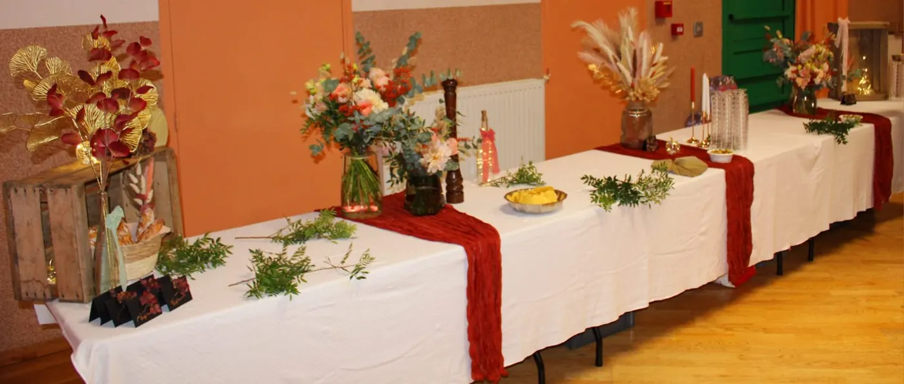

Organisation
Comment organiser un repas après des obsèques ?
Par quoi commencer ? Qui prévenir ? Que faut-il prévoir pour accueillir les proches après la cérémonie ? Les premières étapes pour organiser ce moment sans vous perdre dans les détails.
Article à paraître